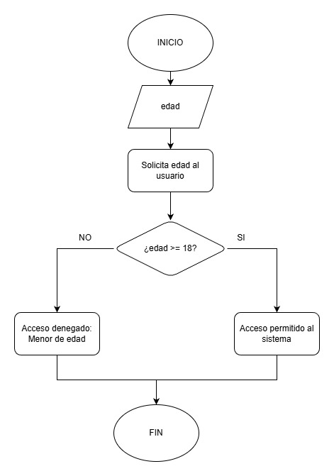
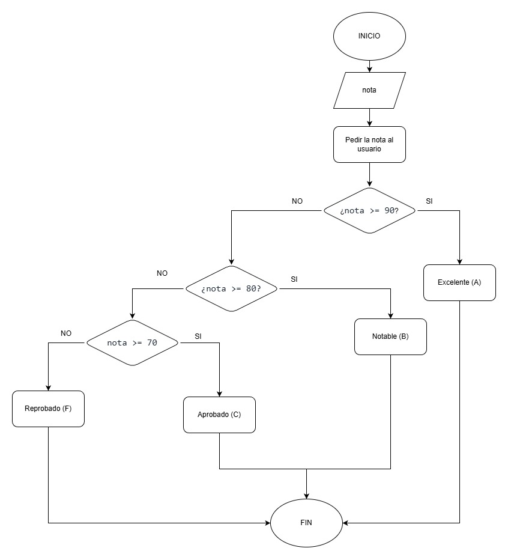
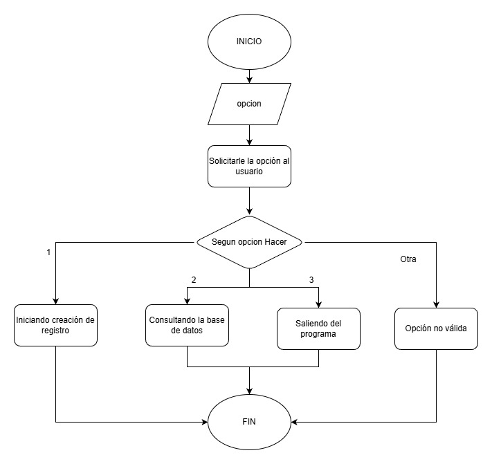

Dentro del Pensamiento Computacional, la construcción de Algoritmos es el pilar donde se definen las secuencias de instrucciones. Sin embargo, un algoritmo no es solo una lista de pasos; para que sea útil, debe ser capaz de reaccionar a distintas situaciones o datos de entrada. Aquí es donde entran las Estructuras de Control Condicionales, el mecanismo que dota a nuestros programas de la inteligencia para tomar decisiones lógicas.
"La lógica de programación es la habilidad de construir el puente entre la necesidad humana y la ejecución de la máquina."
Esta es la base de la toma de decisiones. Evalúa una expresión booleana que resulta en VERDADERO o FALSO. El programa se bifurca en dos caminos mutuamente excluyentes: se ejecuta el bloque Si (if) si la condición es cierta, o el bloque Sino (else) si es falsa.

Las estructuras anidadas (o "elif" / "sino si") permiten evaluar condiciones secundarias solo si la condición primaria fue verdadera (o falsa). Esto construye un árbol de decisiones que permite una lógica más refinada y que no se limita a dos posibles resultados, sino a múltiples escenarios encadenados.

La estructura "Segun" ("switch") es una alternativa limpia y eficiente para evaluar una variable contra múltiples valores específicos y discretos. En lugar de usar muchos "Si-Sino Si", se define un caso para cada valor posible. Si no hay coincidencia, se ejecuta el bloque De Otro Modo ("default").

Como futuro profesional de TIC, es vital elegir la estructura más eficiente para cada escenario. El gráfico de dona ilustra los contextos ideales para cada estructura.
Distribución de Casos de Uso Ideales en Diseño Algorítmico.